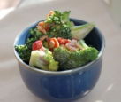
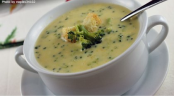
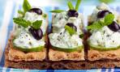
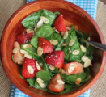
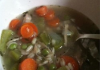
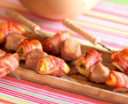

Salad
Soup
Others


Alyson's Broccoli Salad
Bacon adds a little saltiness to this broccoli salad recipe make with sunflower seeds, red onion, and raisins.

Broccoli-Cheese Soup
This is a great recipe! I took the advice of others, and used half Velveeta, half shredded sharp Cheddar for the cheese portion

Tzatziki on toast
A simple yet delicious canapé, this homemade tzatziki tastes heavenly combined with cucumber, mint, olives and served atop rye crackers.

Strawberry Spinach Salad
This spinach and strawberry salad is topped with a fabulous homemade poppy seed dressing.

Hearty Barley Turkey
Homemade turkey stock is simmered for hours on the stove with barley, vegetables, and turkey, creating a warm and comforting pot of soup.

Fruity pork kebabs with chilli BBQ sauce
These fruity pork kebabs go perfectly with the chilli BBQ sauce